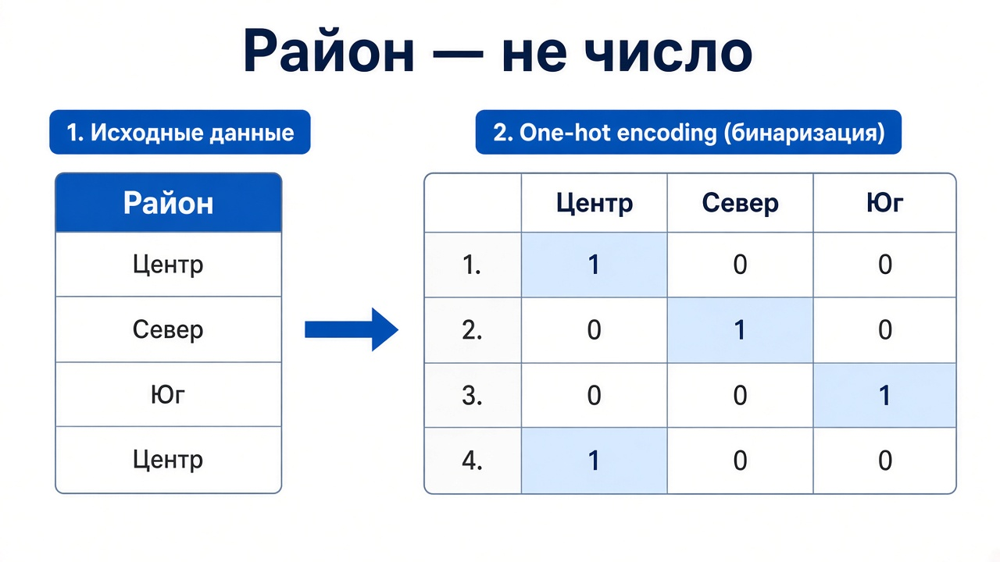

3. Категориальные переменные (Categorical Variables)
В данных много нечисловой информации. На этой странице район квартиры становится числами, которые лес умеет читать.

Если открыли эту страницу отдельно от предыдущих, сначала выполните ячейку. Она заново читает таблицу и делит её так же, как на странице про пропуски: 8000 строк обучение, 2000 проверка, random_state=0.
import pandas as pd
from sklearn.model_selection import train_test_split
from sklearn.ensemble import RandomForestRegressor
from sklearn.metrics import mean_absolute_error
from sklearn.impute import SimpleImputer
flats = pd.read_csv("module-7-0/data/flats_gaps.csv")
y = flats.price
X = flats.drop(columns=["price", "price_note", "flat_id"])
X_train, X_valid, y_train, y_valid = train_test_split(
X, y, train_size=0.8, test_size=0.2, random_state=0
)
num_cols = list(X_train.select_dtypes(include="number").columns)
X_train_num = X_train[num_cols].copy()
cols_with_missing = [col for col in num_cols if X_train_num[col].isna().any()]
district — не число. Значения: север, юг, центр, запад, восток. Между ними нет шкалы «центр больше запада на единицу». Если просто заменить слова числами 0, 1, 2, линейная модель решит, что разница между соседними кодами одинакова. Дерево и лес так не считают: они режут «код района равен такому-то», поэтому порядковые числа им не вредят. Всё равно полезно увидеть оба способа.
Три варианта, снова на одной и той же проверке:
- Выбросить район. Останется площадь. Это нижняя планка: так мы узнаем, сколько даёт сам текст района.
- Порядковое кодирование,
OrdinalEncoder. Каждому району — свое целое. Соответствие выбирает библиотека по алфавиту, не мы. Для леса этого достаточно. - Прямое кодирование,
OneHotEncoder. Появляется столбецdistrict_центр: 1, если квартира в центре, и 0 иначе. То же для остальных районов. Никакого ложного порядка нет. Способ раздувает таблицу, если разных слов сотни. Здесь слов мало, меньше пятнадцати, поэтому он уместен.
Пустой район записываем словом нет. Для кодировщика NaN — не категория, а снова пропуск, и OrdinalEncoder остановится. Слово нет честно говорит: район неизвестен, это шестая категория, а не «ноль комнат».
Год и комнаты на этом шаге снова выбрасываем. Их пользу уже измерили. Если оставить их здесь, MAE района смешается с MAE заполнения.
Ячейка. Подготовка текста и модель без района.
from sklearn.preprocessing import OrdinalEncoder, OneHotEncoder
# cols_with_missing — это year и rooms из прошлого раздела.
# После drop остаются area и district.
X_train_cat = X_train.drop(columns=cols_with_missing).copy()
X_valid_cat = X_valid.drop(columns=cols_with_missing).copy()
# Одно и то же слово в обеих таблицах, иначе у проверки появится категория, которой не было в обучении.
X_train_cat["district"] = X_train_cat["district"].fillna("нет")
X_valid_cat["district"] = X_valid_cat["district"].fillna("нет")
object_cols = ["district"]
def score_forest(X_train, X_valid, y_train, y_valid):
# Деревьев больше, чем в 7.0.1: 30 вместо 10. Числа MAE этого раздела с прошлым не складывают.
model = RandomForestRegressor(n_estimators=30, random_state=0)
model.fit(X_train, y_train)
return mean_absolute_error(y_valid, model.predict(X_valid))
# include="number" отбрасывает district. В таблице остаётся одна площадь.
drop_X_train = X_train_cat.select_dtypes(include="number")
drop_X_valid = X_valid_cat.select_dtypes(include="number")
mae_no_district = score_forest(drop_X_train, drop_X_valid, y_train, y_valid)
print(f"MAE без района: {mae_no_district:.2f}")
Ячейка. Порядковые числа.
label_X_train = X_train_cat.copy()
label_X_valid = X_valid_cat.copy()
ordinal_encoder = OrdinalEncoder()
# fit_transform запоминает список районов на обучении и подставляет числа.
# transform на проверке пользуется тем же списком, а не строит новый.
label_X_train[object_cols] = ordinal_encoder.fit_transform(X_train_cat[object_cols])
label_X_valid[object_cols] = ordinal_encoder.transform(X_valid_cat[object_cols])
# categories_ показывает, какое слово стало нулём, какое единицей. Это алфавит, не «лучше / хуже».
print(ordinal_encoder.categories_)
print(label_X_train[["area", "district"]].head())
mae_ordinal = score_forest(label_X_train, label_X_valid, y_train, y_valid)
print(f"MAE, порядковый код: {mae_ordinal:.2f}")
Ячейка. Столбец на каждый район.
# handle_unknown="ignore": если на проверке вдруг будет район, которого не было в обучении,
# строка получит нули во всех столбцах района, а не ошибку.
# sparse_output=False: обычный массив, а не сжатая матрица. Из него сразу собирается таблица.
oh_encoder = OneHotEncoder(handle_unknown="ignore", sparse_output=False)
oh_train = pd.DataFrame(
oh_encoder.fit_transform(X_train_cat[object_cols]),
# Имена вида district_центр, а не 0, 1, 2. Иначе по печати не понять, где центр.
columns=oh_encoder.get_feature_names_out(object_cols),
# index совпадает с X_train_cat, иначе concat ниже склеит строки не тех квартир.
index=X_train_cat.index,
)
oh_valid = pd.DataFrame(
oh_encoder.transform(X_valid_cat[object_cols]),
columns=oh_encoder.get_feature_names_out(object_cols),
index=X_valid_cat.index,
)
# Числовую площадь ставим рядом с новыми столбцами. Сам текст district больше не нужен.
oh_X_train = pd.concat([X_train_cat.select_dtypes(include="number"), oh_train], axis=1)
oh_X_valid = pd.concat([X_valid_cat.select_dtypes(include="number"), oh_valid], axis=1)
print(list(oh_train.columns))
print(oh_X_train.head(3))
mae_onehot = score_forest(oh_X_train, oh_X_valid, y_train, y_valid)
print(f"MAE, прямое кодирование: {mae_onehot:.2f}")
В трёх первых строках head в каждой строке ровно одна единица среди столбцов района: квартира не может быть сразу в двух районах. У слова нет единица стоит в district_нет.
Критерий 7.0.2. MAE без района — 389.37. Порядковый код — 278.24. Прямое кодирование — 278.10. Столбцы прямого кода: district_восток, district_запад, district_нет, district_север, district_центр, district_юг. Худший вариант — выбросить район: ошибка падает примерно на 110, как только район возвращается. Два кодирования на лесе почти совпали. Лес не требует, чтобы числа районов шли «по возрастанию качества». Для линейной модели в следующем курсе безопаснее прямое кодирование.